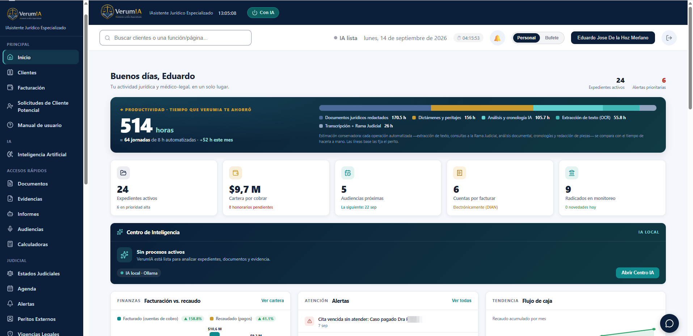
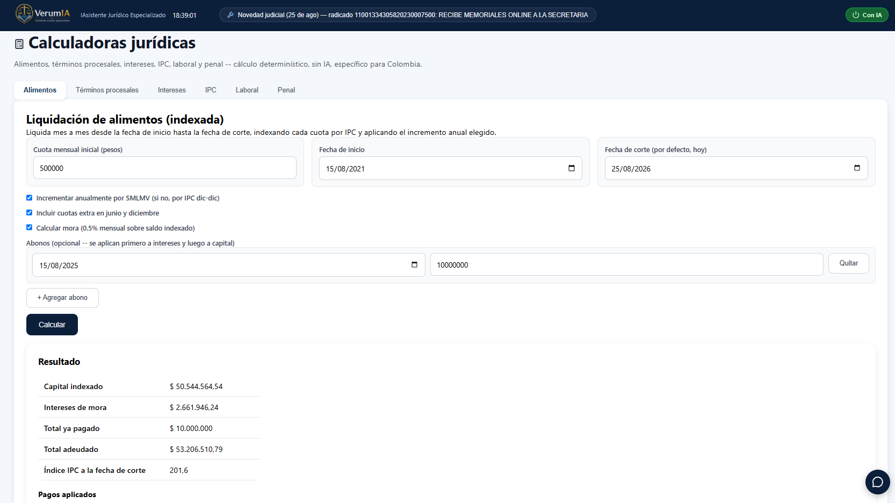
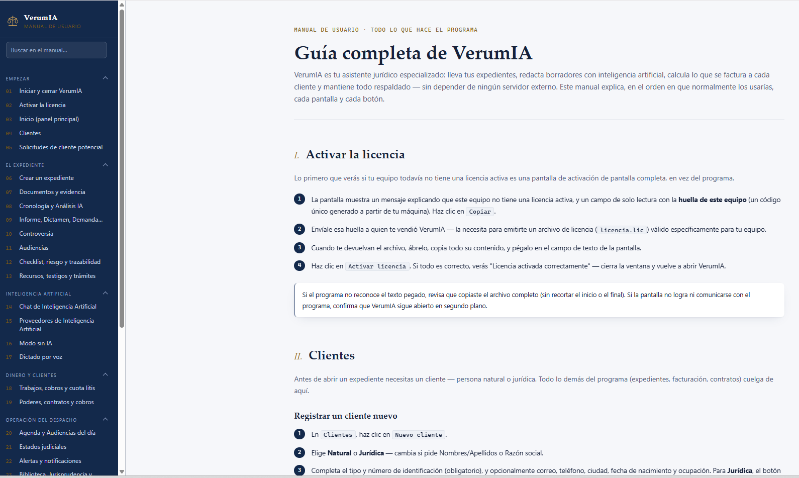

Médico-legales 10 tipos
Medicina laboralPsiquiatríaPsicología clínicaPsicología forenseOdontologíaEnfermeríaFisioterapiaToxicologíaPatologíaMedicina forense
Para abogados y peritos de todas las áreas. Lleva tus expedientes, redacta demandas y dictámenes periciales con inteligencia artificial, calcula lo que se factura a cada cliente y mantiene todo respaldado en tu propio equipo.
Versión 1.3.5 para Windows · al descargar eliges la liviana (cerca de 0,4 GB) o la completa (cerca de 1,4 GB)
Demo completa por 7 días, luego pide tu licencia. ¿Ya la descargaste? Ver instrucciones de instalación
VerumIA arma la cronología desde tu expediente y cada entrada remite al documento que la respalda. Tú revisas, ajustas y firmas.
Día 1, 08:10. Ingreso a urgencias con dolor abdominal.
Historia clínica · folio 12Día 1, 17:30. Primera valoración por el especialista.
Historia clínica · folio 47Día 2, 06:00. Traslado a cirugía.
Acervo probatorio · folio 112Claude es el puente: conversa con tu despacho hablando, busca expedientes, lee el acervo y prepara borradores. Google pone el resto: calendario con tus audiencias y vencimientos en el celular, alarmas, avisos por Gmail y la nube de Drive para compartir con tus socios.
Claude es una marca de Anthropic y Google es una marca de Google LLC. VerumIA no está afiliada ni patrocinada por ellas; cada conexión es opcional y se activa con tu propia cuenta.

El Centro de Comando de VerumIA: todo lo que necesita tu atención hoy, con tus propios datos, sin configurar nada.
Estimación conservadora de las horas que te ahorró frente a hacerlo a mano, desglosada por extracción de texto, consultas a la Rama Judicial, cronologías, análisis y redacción.
Qué expediente está procesando la IA en este momento, con su barra de progreso y cuántos más esperan en cola — se actualiza sola cada 8 segundos.
Compara la Probabilidad de Victoria Real que estimó la IA contra el resultado real de tus casos ya cerrados, para saber si tiende a ser optimista, pesimista o certera con tu tipo de procesos.
VerumIA acompaña el ciclo completo: desde el cliente y el expediente, hasta el dictamen radicado y la cuenta de cobro pagada.
Personas naturales o jurídicas, con todos sus casos colgando de la ficha. Cada expediente aísla sus documentos, cronología y análisis, aunque el mismo cliente tenga varios procesos abiertos.
Cuatro repositorios separados por función: Documentos, Acervo Probatorio, Evidencia Recaudada y E.F./E.M.P. Con OCR, extracción de texto, unificación y control de duplicados.
La IA lee cada documento, detecta su fecha real y arma la línea de tiempo del caso, indicando la fuente documental de cada evento.
Hecho, daño, nexo causal, comparación normativa y Probabilidad de Victoria Real. Con verificación de evidencia y auditoría de consistencia entre los propios análisis.
La contraparte simulada: la IA ataca tu propio caso para que encuentres los huecos antes que el juez o el litigante contrario.
Compara la Demanda contra la Contestación hecho por hecho, y te muestra en tabla dónde hay aceptación, negación o contradicción.
La IA entrega un borrador estructurado y prellenado con el material real del expediente. Tú corriges y firmas.
Con el membrete, la firma y las credenciales profesionales del usuario que lo emite — incluidos peritos con más de una profesión acreditada. Elige con casillas qué ya tienes subido (Documentos, Acervo Probatorio, Evidencia Recaudada) y VerumIA lo unifica y folia en un solo PDF, listado como bibliografía al final del documento.
Además del dictamen médico-legal estructurado, cada tipo de peritaje tiene su propio formulario por especialidad. VerumIA no es solo para peritos médicos: también para contadores, ingenieros, avaluadores, grafólogos, criminalistas y más.
Y el dictamen médico-legal estructurado, con estatus probatorio, como base de todos ellos.
Cada una con su propia cadena de agentes de análisis, no un prompt genérico.
En Penal, además, la etapa procesal (captura, imputación, acusación, sentencia) determina qué tan exigente es la IA al evaluar la suficiencia probatoria.
Graba en vivo desde el programa o sube una grabación existente, y obtén la transcripción con análisis de testimonio.
Consulta automatizada del portal de la Rama Judicial por radicado, con marcado de novedades revisadas y sincronización masiva.
Eventos, audiencias del día, vencimientos y notificaciones de todo lo que exige tu atención.
Qué se le factura a cada cliente, qué pagó, con comprobantes adjuntos por pago.
Más de 105 modelos de contrato con cláusulas modulares editables (que puedes reordenar, quitar o traer del Banco de Cláusulas), además de poderes, cuentas de cobro, cotizaciones y paz y salvo — en Word y PDF, con QR de verificación. Contratos, poderes y paz y salvo, los tres, los puede firmar tu cliente electrónicamente. En compraventa de vehículo, el Formulario RUNT de traspaso se diligencia solo, tomando los datos ya cargados en el contrato.
Comparte un expediente con otra instalación de VerumIA, con sincronización, control de conflictos e historial de cambios — ahora también por Google Drive, sin instalar ni configurar ningún programa de nube aparte, ideal para oficinas de 2 o más personas.
Corpus documental indexado con búsqueda vectorial, para que la IA compare tu caso contra la norma y el precedente.
Respaldo automático programado a la carpeta o disco que elijas, con la base de datos y todos los archivos.
Roles diferenciados (abogado, perito, asistente, secretaria, contador…) y registro de auditoría de cada acción.
Consulta al RUES para validar razón social y representante legal de un cliente jurídico, y verificación pública en línea por huella digital (hash SHA-256) para contratos, poderes y paz y salvo ya generados — funciona desde el primer arranque, sin configurar nada. Para firmar, elige el canal según el caso: el cliente firma en el momento escaneando un código QR con su propio celular, tú te llevas el documento y lo firma contigo sin necesitar conexión a internet, o — si nunca van a estar en el mismo lugar — le envías un enlace por correo o WhatsApp y firma desde donde esté.
Busca un nombre o razón social contra los clientes y contrapartes de todos tus expedientes antes de aceptar un caso nuevo, y te lista dónde ya aparece.
Si ya usas la app de escritorio de Claude, conéctala a tu propia instalación de VerumIA: busca un expediente por el nombre del cliente y edita Demanda, Contestación, Tutela, Contratos, Poderes y el resto de tus documentos jurídicos conversando directamente con la IA, sin abrir el navegador.
VerumIA trabaja por sí solo, y rinde mucho más cuando lo conectas con Claude y con tu cuenta de Google (Gmail, Calendar, Drive y más). Estas son algunas de las cosas que puede hacer con ellas.
Conecta Claude Desktop a tu propia instalación y pídele, hablando: que busque un expediente por el nombre del cliente, lea el acervo probatorio, edite demandas, tutelas, derechos de petición, contratos, poderes y demás documentos, genere borradores con IA y descargue el PDF final. El alcance lo limita el propio servidor de VerumIA: Claude no ve la licencia, los usuarios ni las copias de seguridad.
Tus audiencias, citas y vencimientos viajan a tu Google Calendar, con enlace de Meet automático para las videollamadas, y los llevas contigo en el celular sin abrir VerumIA.
Cuando un proceso que sigues tiene una novedad en la Rama Judicial, el aviso te llega también a tu bandeja de entrada, no solo dentro de la aplicación.
Comparte expedientes con tus socios usando tu cuenta de Google, con sincronización, control de conflictos e historial de cambios, sin instalar ningún programa de nube aparte.
Cada integración es opcional: la activas tú desde Configuración → Integraciones, con tu propia cuenta, y tus documentos siguen en tu equipo.
Fórmulas determinísticas específicas para Colombia — sin inteligencia artificial: el mismo dato de entrada siempre da el mismo resultado, con el detalle de cómo se llegó a la cifra.

La calculadora de Alimentos, liquidando mes a mes desde la fecha de inicio hasta la fecha de corte.
Las de Alimentos, Intereses e IPC exportan en PDF/Word o se archivan directo en el expediente. El cálculo de Pretensiones en Demanda médico-legal viene integrado en ese mismo formulario, no como calculadora aparte.
Cada versión suma funciones reales, pensadas para el día a día del despacho — sin depender de una nube propia: tus datos viven en tu equipo.
Además del QR en el momento, ahora puedes llevarte el documento al celular y firmarlo con el cliente sin conexión, o mandarle un enlace por correo/WhatsApp para que firme desde donde esté. Poder y Paz y Salvo se suman a Contratos.
Elige con casillas qué ya tienes subido en Documentos, Acervo Probatorio o Evidencia Recaudada, y VerumIA lo unifica y folia en un solo PDF, listado como bibliografía al final del documento — antes "anexos" era solo texto suelto.
Genera por separado la página con juzgado, partes, apoderado y el listado de anexos, lista para la radicación electrónica (Decreto 806/2020, Ley 2213/2022).
La conexión con la app de escritorio de Claude ahora cubre todos tus documentos jurídicos (antes solo 7): Contratos, Poderes, Paz y Salvo, Escritos, Recursos, Incidentes y más.
La verificación pública de documentos ya funciona desde el primer arranque, en toda instalación — nueva o actualizada —, sin conectar ninguna cuenta ni crear ninguna hoja de cálculo.
Alternativa más simple a la carpeta compartida de siempre: con la cuenta de Google ya vinculada, comparte expedientes con tus socios sin instalar ningún programa de nube aparte.
Nuevo gráfico de ingreso bruto frente a egreso por mes, junto al de flujo de caja acumulado (ahora con el nombre aclarado para que no se confundan).
Cada testigo a citar ahora incluye documento de identidad, dirección, correo y teléfono — no solo el nombre — y el juramento estimatorio trae un texto prellenado que cumple los requisitos formales.
Un proveedor recién agregado (sin guardar todavía su API key) ya se puede quitar sin tener que recargar la página.
Además de la redacción y el análisis con inteligencia artificial, VerumIA lleva la operación diaria del despacho con funciones deterministas — nunca fallan por falta de proveedor de IA ni de cuota, porque no la necesitan.
Disponible dentro del programa en cualquier momento: 32 capítulos con buscador propio, cubriendo cada botón y cada función, desde activar la licencia hasta la última herramienta del despacho.

El manual de usuario, siempre a un clic de distancia dentro del programa.
Depende de cómo uses la inteligencia artificial. Elige tu caso: VerumIA trabaja sin IA, con la IA de un proveedor en la nube (con tu propia clave) o con IA local en tu computador.
| Requisito | Sin IA | Con IA por clave (API) | Con IA local |
|---|---|---|---|
| Windows | ✓ 10 u 11, 64 bits | ✓ 10 u 11, 64 bits | ✓ 10 u 11, 64 bits |
| Memoria (RAM) | ✓ 8 GB. VerumIA usa unos 0,6 GB | ✓ 8 GB | ✓ 16 GB recomendados |
| Disco libre | ✓ 3 GB | ✓ 3 GB | ✓ 9 GB: los 3 GB más Ollama (1,4 GB) y el modelo (4,3 GB) |
| Internet | ✓ Para consultas judiciales, Google y descargas | ✓ Necesario también para la IA | ✓ La IA funciona sin internet |
| Google Chrome | ✓ Para las consultas judiciales | ✓ Para las consultas judiciales | ✓ Para las consultas judiciales |
| Tarjeta gráfica | ✗ No hace falta | ✗ No hace falta | ✓ NVIDIA con 5 GB de VRAM o más. Sin ella funciona un modelo menor, más lento |
| Qué instalas o contratas | ✗ Nada más | ✓ Una clave propia de un proveedor: Gemini, Groq, OpenAI, Anthropic y otros | ✓ Ollama y el modelo gemma4 e2b; el instalador puede descargarlos por ti |
| Búsqueda semántica | ✓ Opcional. Descarga un modelo de unos 0,5 GB y suma unos 0,4 GB de RAM | ✓ Igual | ✓ Igual |
| Audiencias en vivo | ✓ Transcribe con el procesador | ✓ Transcribe con el procesador | ✓ Con tarjeta NVIDIA transcribe de 5 a 10 veces más rápido (versión completa) |
Cifras medidas con la versión 1.3.5. En un equipo con menos memoria o disco puede funcionar, pero más lento. El uso de memoria depende de los documentos que abras.
Indica cuántos equipos necesitas y por cuánto tiempo — el precio por equipo se ajusta solo, más bajo entre más equipos pidas.
El precio por equipo baja con cada equipo adicional, hasta llegar al valor mínimo en 10 o más.
Completa tu nombre y correo, acepta la autorización de datos (a la izquierda) y dale clic a "Calcular cotización" para ver el precio.
Precios de referencia en pesos colombianos (COP). El vendedor confirma el valor final al recibir tu solicitud.
La app complementaria de VerumIA: consulta tus expedientes, agenda, calculadoras y comparte fotos o PDF directo hacia un expediente desde el celular, incluso sin conexión a la oficina.
VerumIA se instala y corre en tu propio computador. La base de datos, los expedientes, las historias clínicas y las grabaciones viven en tu máquina, no en la nube de nadie.
Para la inteligencia artificial puedes trabajar con un modelo local (Ollama), que no envía nada a internet, o conectar tu propia clave de alguno de los 14 proveedores soportados, con una cadena de respaldo que salta al siguiente si uno se cae o agota su cuota.
Con el modelo local (Ollama), el análisis corre en tu propio equipo: la rapidez y la profundidad del resultado dependen directamente de la capacidad de tu computador (procesador, memoria RAM y, si tiene, tarjeta gráfica). Un equipo modesto puede tardar más y trabajar con modelos más livianos. Con un proveedor en la nube, el rendimiento depende en cambio de la clave y el plan que contrates con ese proveedor. En ambos casos puedes ajustar qué proveedor usa cada función desde Configuración.
Nota profesional. VerumIA produce borradores y análisis de apoyo. No sustituye el criterio del médico, el abogado o el perito, y toda afirmación relevante queda marcada para su verificación contra el documento original.